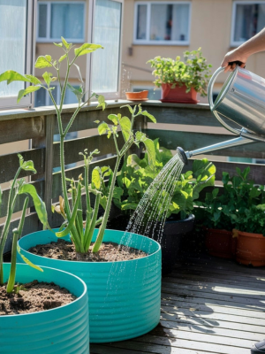
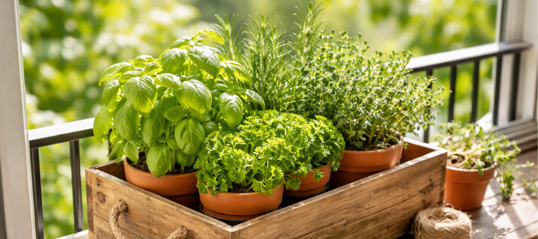
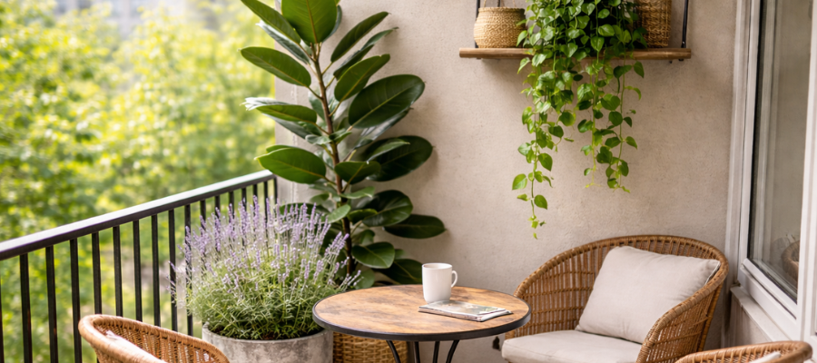
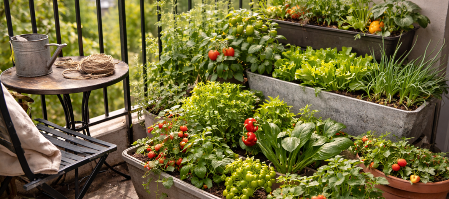
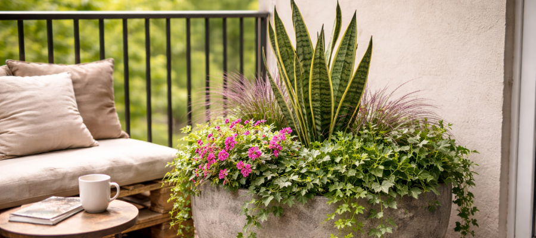
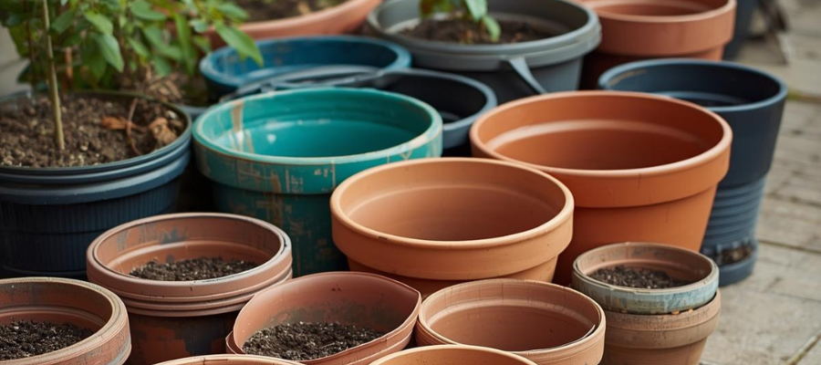
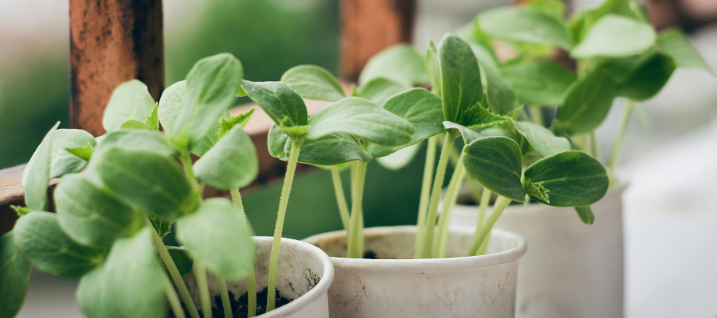
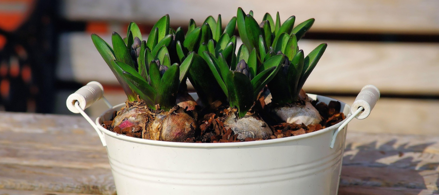
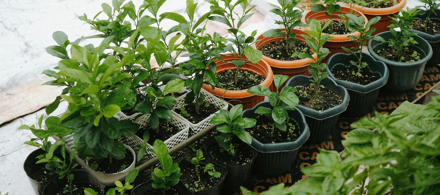

Container Gardening Ideas for Small Balconies and Patios
4 March 2026
Container gardening is one of the simplest ways to grow something beautiful in a small space. You don’t need a backyard, perfect soil, or elaborate tools — just a few well-chosen pots and plants can turn a balcony, patio, or window ledge into a calm green corner.
For apartment living especially, container gardening keeps things flexible. You can move plants with the seasons, adjust for light, and experiment without committing to permanent beds.
Why Container Gardening Works So Well in Cities
Containers give you control over growing conditions. You choose the soil, drainage, placement, and even how protected plants are from wind or heat.
They also make seasonal gardening easier. Herbs, vegetables, flowers, and even some houseplants can enjoy summer outdoors and then return inside when temperatures drop — perfect for climates with real winters. If you plan to move plants outdoors seasonally, read our guide on preparing houseplants for outdoor summer.
Simple Container Garden Ideas to Try
🌿 A Calm Herb Corner

Herbs are one of the easiest starting points for container gardening. Rosemary, thyme, oregano, and basil all thrive in pots and usually appreciate the warmth of a sunny balcony. Because many herbs naturally grow in dry, windy, open environments, they adapt well to containers and don’t require constant attention once established.
Besides being useful in the kitchen, herbs release subtle scent when warmed by the sun or brushed by a passing breeze. This makes even a small balcony feel more alive and sensory — not just green, but also gently fragrant.
🌿 A Mixed Plant Relaxation Spot

A mixed container corner is a simple way to make a balcony feel layered and intentional without needing many plants. Try combining one structural plant, one trailing plant, and one softer filler to create balance.
For example, a snake plant or rubber plant gives height and stability, while pothos or ivy softens edges and adds movement. A seasonal flowering plant or textured foliage plant can bring in color without overwhelming the space. Some houseplants adapt especially well to outdoor containers — see our list of plants that love a summer on the balcony.
Mixing shapes and growth styles makes a container arrangement feel fuller and calmer at the same time. Even two or three pots grouped thoughtfully can create a small retreat that feels more like a garden.
🌿 Edible Containers for Summer

If you enjoy growing food, containers are one of the easiest ways to start. Many edible plants adapt beautifully to pots because their root systems don’t need deep beds to produce well.
Cherry tomatoes, lettuce, peppers, and strawberries all grow happily in containers as long as they receive enough sun and consistent watering. These plants also tend to respond quickly to warmth, which means you often see visible growth throughout the season.
Even one edible plant can shift how a balcony feels. Watching something ripen or harvesting a few leaves for dinner adds a sense of rhythm to the space — it turns the balcony from decorative into quietly productive.
🌿 One Big Statement Pot

If your balcony is small or you prefer a calmer look, one large planter can create more impact than many small pots. A single container planted thoughtfully can feel like a complete miniature garden.
Try placing a taller plant in the center, something soft or bushy around it, and a trailing plant near the edge. This layered approach mimics how plants grow naturally and helps the arrangement look full from every angle.
Larger containers also dry out more slowly than small pots, which makes watering easier to manage in summer. For busy weeks or travel days, one stable planter often keeps plants happier than several small ones scattered around.

Choosing the Right Containers
Not all pots behave the same outdoors — especially on a city balcony where sun, wind, and temperature shifts can be stronger than you expect.
Terracotta is a classic for container gardening. It’s breathable, which helps prevent overwatering and root rot. The downside? It dries out faster in full sun, so herbs and thirsty plants may need more frequent watering in summer.
Plastic pots are lightweight and practical — perfect for balconies where weight matters. They hold moisture longer and are easier to move around if you like rearranging your space (or bringing plants inside during cooler months). For urban gardening beginners, plastic is often the most forgiving choice.
Ceramic containers look beautiful and elevated, especially if you're styling a calm, intentional balcony corner. But they can be heavy and sometimes expensive. If you like the look, consider using them for one or two plants rather than your entire setup.
No matter the material, drainage holes are non-negotiable. Without proper drainage, roots sit in water, struggle to breathe, and eventually rot. If you fall in love with a pot that doesn’t have holes, use it as a decorative cover pot and place a nursery pot inside. Lastly, choose slightly larger pots than you think you need — soil retains moisture better and supports healthier root growth.

Keeping Container Plants Happy
Container plants rely fully on you for water and nutrients — they don’t have access to deep ground moisture or surrounding soil ecosystems. These few small, consistent habits make a big difference in keeping your balcony garden healthy.
Water deeply rather than lightly.
A quick splash on the surface only wets the top layer of soil. Deep watering encourages roots to grow downward, which makes plants more stable,
drought-tolerant, and resilient during hot or windy days. Water until you see it draining from the bottom — that’s when you know the roots are
truly hydrated.
Check the soil, not the calendar.
Instead of watering on autopilot, press your finger about 2–3 cm into the soil. If it feels dry at that depth, it’s time to water.
If it still feels slightly moist, wait a day. This simple habit prevents both overwatering and underwatering — the two most common beginner
mistakes in container gardening.
Expect to water more during hot or windy weeks.
Balconies can amplify weather. Sun reflects off walls, wind increases evaporation, and pots dry out much faster than garden beds.
In peak summer, some plants may need water every day — especially herbs, tomatoes, and anything in terracotta.
Feed gently but consistently.
Because watering gradually washes nutrients out of containers, plants benefit from light feeding during the growing season.
A balanced liquid fertilizer every few weeks can support steady growth without overwhelming the roots.
Rotate and observe.
If wind or sun hits one side of your balcony more strongly, rotate your pots every week or two. This keeps growth balanced and prevents one side
from drying out faster than the other.
A little observation goes further than perfect routines. When you start noticing how leaves respond to heat, how soil feels before rain, or how quickly pots dry after a windy day, gardening becomes intuitive. Container plants aren’t fragile — they just need steady, attentive care. And once you get into that rhythm, maintaining a small balcony garden feels surprisingly calm and grounding.

A Gentle Way to Start Gardening
Container gardening doesn’t need to be ambitious to feel meaningful. One herb, one leafy plant, or one flowering pot can already soften a balcony and shift the atmosphere. A single container on a small table can make your morning coffee feel more intentional. A simple pot by the railing can turn an overlooked corner into something alive.
Starting small also removes pressure. You don’t need a full balcony makeover or a dozen plants to “do it right.” In fact, beginning with just one or two containers helps you learn how your space behaves — how much sun it gets, how strong the wind feels, how quickly the soil dries. For exposed spaces, you may want to choose wind-tolerant plants — here’s how to garden on a breezy balcony.
Over time, you can add more containers, adjust layouts, or experiment with new plants. Maybe you start with basil and later add cherry tomatoes. Maybe one leafy plant becomes a small mixed corner. The process stays flexible and forgiving — which is often exactly what small-space living needs.

Final Thought
Container gardening isn’t about growing as much as possible. It’s not a competition, and it doesn’t require a perfectly styled balcony or a long list of plants. At its heart, it’s about creating a small, living space that feels calm, seasonal, and personal.
A few thoughtfully chosen pots can shift the energy of a balcony completely. Green leaves catch the light differently throughout the day. Herbs release scent in warm sun. Even the simple act of watering becomes a quiet pause in your routine. These small interactions add up.
In compact city spaces especially, plants soften hard lines — railings, concrete, glass — and bring movement and texture where everything else feels structured. They remind you that seasons are changing, that growth takes time, and that tending something regularly can feel grounding.
You don’t need a full balcony garden to feel that shift. Even two or three containers placed with intention can turn an outdoor corner into somewhere you actually want to step outside, breathe a little deeper, and slow down for a moment. And sometimes, that small moment is the whole point.